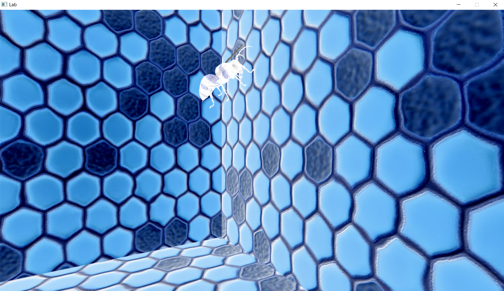
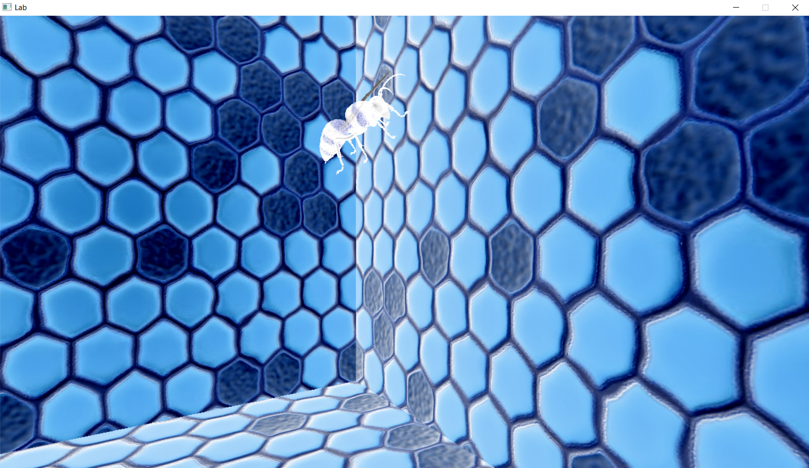

ABOUT ME
I'm a software engineer, a master's degree in computer science concentrating in computer graphics and a bachelor's degree in computer science and media arts from Northeastern University.
I've always enjoyed problem solving and looking at the world from a new perspective. My love for art has lead me to a career where I can combine it with my enjoyment of math and science, and I've found my creative and determined mindset has helped me to thrive in the computer science industry. I'm always looking for new ways to learn and am excited for new opportunities.
I have professional experience as a rendering engineer at Raven Sowftware working on Call of Duty and as a computer graphics engineer on the Olympics Technology Group at Intel. I have additional software engineering experience working at PowerAdvocate and Poloniex. My main interests and skills are in computer graphics, rendering, and tools and technical art.
PROFESSIONAL EXPERIENCE
PERSONAL PROJECTS
Interactive Bee Scene
An OpenGL C++ scene that displays several bees in a honeycomb scene. Implemented naviagtion and uses a frame buffer to alter the scene with by applying gray-scale, blur, sharpen, edge detection, or inversion. Also applies blending to the bees' wings for transparency. The textures of the bee and normal map of the wall are custom made. Video explanation.
 

VR Volt Hockey
A virtual reality training game for volt hockey - an adaptive sport similar to ice hockey, but played 3 on 3 in powered wheelchairs. This project was developed in a team using Unity and C# scripting. A literature review and survey was conducted to identify needs and wants. A pilot study and representative study was used to evaluate and improve the experience. The resulting application was a serious game that reviewed the rules of volt hockewy and takes the player through three training stages - slapshot practive, a static obstacle course, and a dynamic obstacle course.
Maya Tools
Two tools developed for Maya. The concepts were pitched by artists in Northeastern's animation capstone course. The first tool allows users to create a curve, a plane, or a poly object based off of the position of a selected group of objects. The second allows the user to select objects and align them to the center of a selected plane See the code here and here.


Android Stopwatch and Timer
A timer app for Android, made up of one activity and three fragments. It implements a standard countdown, a pomodoro countdown, and a stopwatch functionality. See the code here.